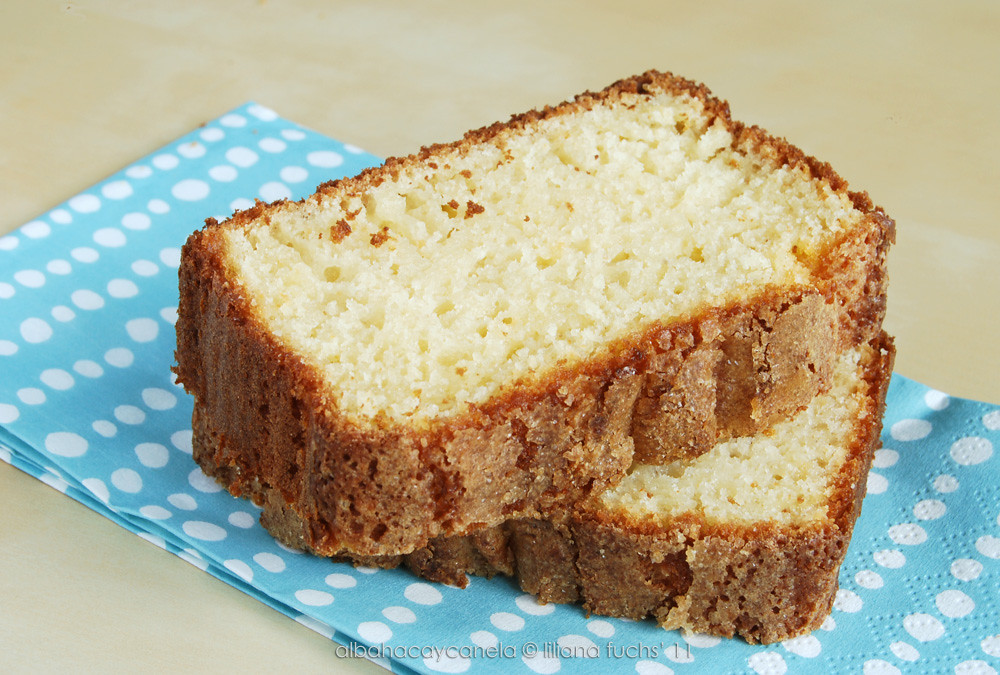

Home
Yogurt cake

Description
A French yogurt cake, known in France as gâteau au yaourt, is a classic, simple loaf or round cake that serves as a staple of French home baking. It has a soft, moist, and slightly fluffy texture—similar to a lighter version of a traditional pound cake.
Ingredients
- 1 pot of plain, whole-milk yogurt
- 1 pot of neutral vegetable oil
- 2 pots of sugar
- 3 pots of all-purpose flour
- 3 to 4 large eggs
- A spoonful of baking powder and a pinch of salt
Steps
- Preheat your oven to 180°C (350°F). Grease and flour a cake pan or loaf pan to prevent sticking.
- Empty the pot of yogurt into a large mixing bowl (save the empty pot to measure the remaining ingredients). Add the sugar and eggs. Whisk vigorously until the mixture becomes smooth and slightly frothy.
- Add the flour, baking powder, and pinch of salt to the bowl. Mix gently with a spatula or whisk just until combined and free of lumps. Avoid overmixing.
- Pour in the vegetable oil last. Gently stir until the oil is completely absorbed and the batter is smooth and shiny.
- Pour the batter into your prepared pan. Bake for 30 to 35 minutes. The cake is done when a toothpick inserted into the center comes out clean.
- Let the cake cool in the pan for about 10 minutes before unmolding it onto a wire rack to cool completely.